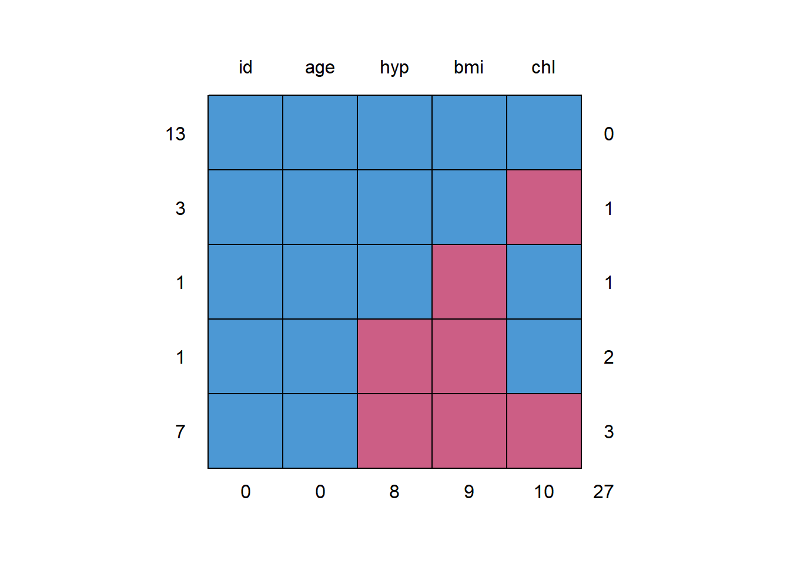
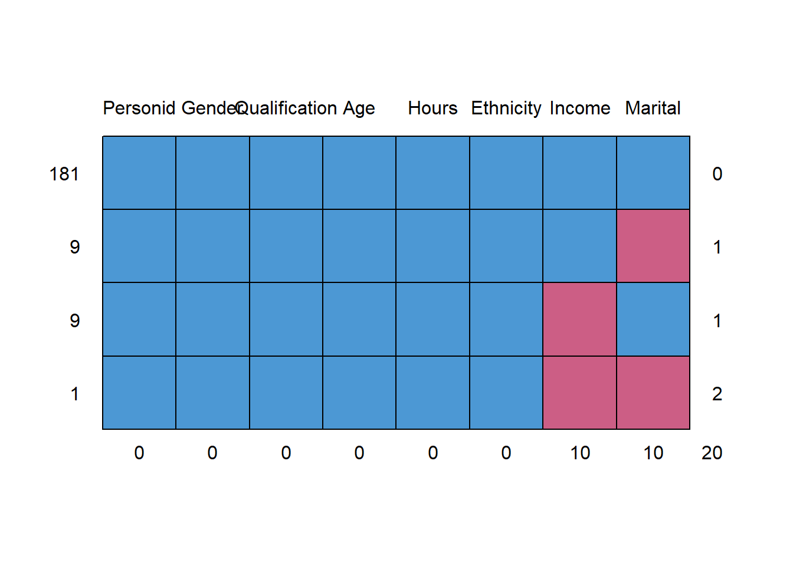
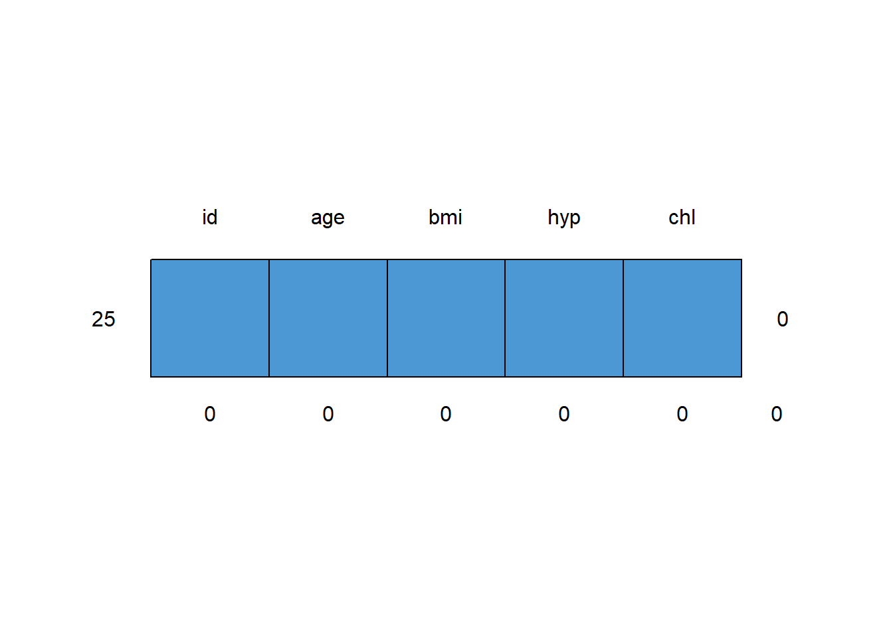
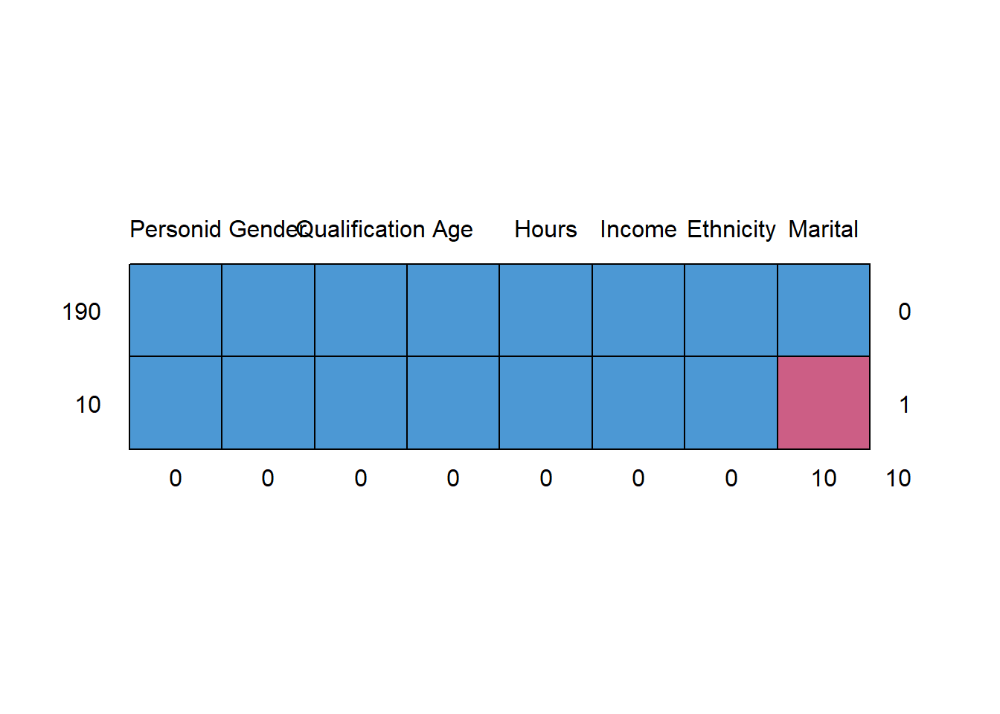
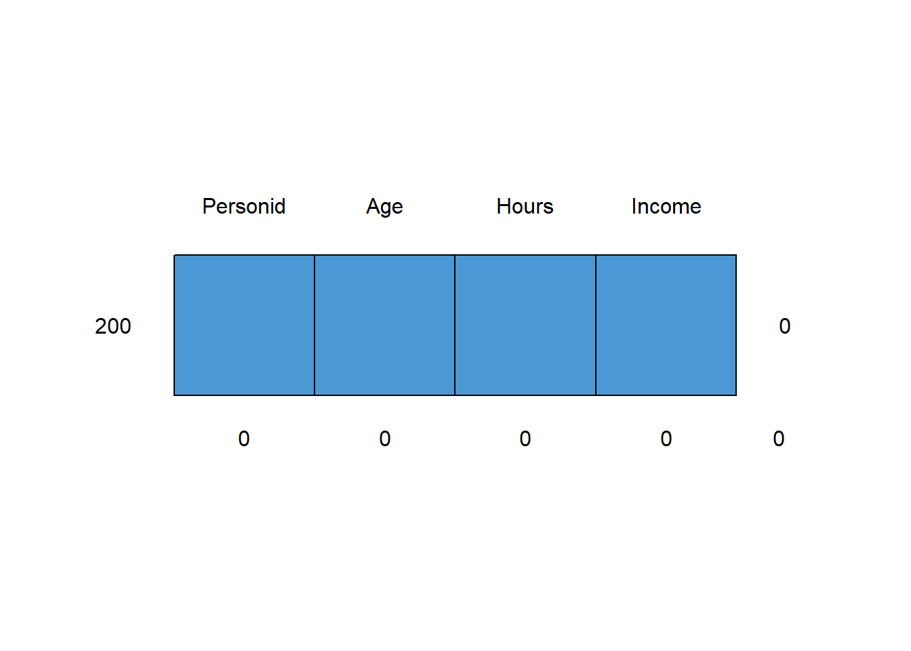

9 Imputation
Dealing with item non-response
Can do complete case analysis, but that risks both bias and loss of precision due to reduced sample size.
Another option is imputation: fill in the data using a model. All such models involve untestable assumptions.
Remove some data: marital status and income
set.seed(111)
msurf <- surf
msurf$Marital[sample(nrow(surf),10)] <- NA
msurf$Income[sample(nrow(surf),10)] <- NA
table(msurf$Marital,exclude=NULL)##
## married never other previously <NA>
## 68 82 20 20 10## [1] 10Package mice provides for multiple imputation methods, but gives some datasets
and some visualisation tools. It’s a bit tricky to use, so we’ll use a simpler
function impute().
Example dataset supplied with mice is nhanes - note all variables are numeric
mnhanes <- mice::nhanes
mnhanes$age <- factor(mnhanes$age)
mnhanes <- data.frame(id=factor(1:nrow(mnhanes)),mnhanes)
dim(mnhanes) # 25 x 5## [1] 25 5## id age bmi hyp chl
## 1 : 1 1:12 Min. :20.40 Min. :1.000 Min. :113.0
## 2 : 1 2: 7 1st Qu.:22.65 1st Qu.:1.000 1st Qu.:185.0
## 3 : 1 3: 6 Median :26.75 Median :1.000 Median :187.0
## 4 : 1 Mean :26.56 Mean :1.235 Mean :191.4
## 5 : 1 3rd Qu.:28.93 3rd Qu.:1.000 3rd Qu.:212.0
## 6 : 1 Max. :35.30 Max. :2.000 Max. :284.0
## (Other):19 NA's :9 NA's :8 NA's :10Surf data is a mixture of numeric and categorical variables
## Personid Gender Qualification Age
## Min. : 1.00 Length:200 Length:200 Min. :15.00
## 1st Qu.: 50.75 Class :character Class :character 1st Qu.:22.75
## Median :100.50 Mode :character Mode :character Median :32.00
## Mean :100.50 Mean :30.69
## 3rd Qu.:150.25 3rd Qu.:38.00
## Max. :200.00 Max. :45.00
##
## Hours Income Marital Ethnicity
## Min. : 2.00 Min. : 11.0 Length:200 Length:200
## 1st Qu.:20.00 1st Qu.: 355.2 Class :character Class :character
## Median :40.00 Median : 532.5 Mode :character Mode :character
## Mean :33.71 Mean : 586.9
## 3rd Qu.:45.00 3rd Qu.: 819.8
## Max. :70.00 Max. :1789.0
## NA's :10Inspect missing pattern

## id age hyp bmi chl
## 13 1 1 1 1 1 0
## 3 1 1 1 1 0 1
## 1 1 1 1 0 1 1
## 1 1 1 0 0 1 2
## 7 1 1 0 0 0 3
## 0 0 8 9 10 27
## Personid Gender Qualification Age Hours Ethnicity Income Marital
## 181 1 1 1 1 1 1 1 1 0
## 9 1 1 1 1 1 1 1 0 1
## 9 1 1 1 1 1 1 0 1 1
## 1 1 1 1 1 1 1 0 0 2
## 0 0 0 0 0 0 10 10 20Mean, median or mode imputation
##
## 20.4 21.7 22 22.5 22.7 24.9 25.5 26.3 27.2 27.4 27.5 28.7 29.6 30.1 33.2 35.3
## 1 1 1 1 1 1 1 1 1 1 1 1 1 1 1 1
## <NA>
## 9##
## 20.4 21.7 22 22.5 22.7 24.9 25.5 26.3 27.2 27.4 27.5 28.7 29.6 30.1 33.2 35.3
## 1 1 2 2 2 3 1 1 3 1 1 2 2 1 1 1dx <- mnhanes
dx$bmi[dx$age=="1"] <- NA
dd <- impute(dx, varname="bmi", method="sample", formula=~age)## Warning in FUN(data[x, , drop = FALSE], ...): Cell with missing data but no
## donors: data not imputed##
## 20.4 21.7 22 22.5 22.7 24.9 25.5 26.3 27.2 27.4 27.5 28.7 29.6 30.1 33.2 35.3
## 1 1 1 1 1 1 1 1 1 1 1 1 1 1 1 1
## <NA>
## 9##
## 21.7 22 22.7 24.9 25.5 26.3 27.2 27.4 28.7 <NA>
## 1 1 2 3 1 2 1 1 1 12## 1 2 3
## 28.37143 25.42000 24.82500Overall mean and median and mode
## id age bmi hyp chl bmi.imp
## 1 1 1 26.5625 NA NA TRUE
## 2 2 2 22.7000 1 187 FALSE
## 3 3 1 26.5625 1 187 TRUE
## 4 4 3 26.5625 NA NA TRUE
## 5 5 1 20.4000 1 113 FALSE
## 6 6 3 26.5625 NA 184 TRUE
## 7 7 1 22.5000 1 118 FALSE
## 8 8 1 30.1000 1 187 FALSE
## 9 9 2 22.0000 1 238 FALSE
## 10 10 2 26.5625 NA NA TRUE
## 11 11 1 26.5625 NA NA TRUE
## 12 12 2 26.5625 NA NA TRUE
## 13 13 3 21.7000 1 206 FALSE
## 14 14 2 28.7000 2 204 FALSE
## 15 15 1 29.6000 1 NA FALSE
## 16 16 1 26.5625 NA NA TRUE
## 17 17 3 27.2000 2 284 FALSE
## 18 18 2 26.3000 2 199 FALSE
## 19 19 1 35.3000 1 218 FALSE
## 20 20 3 25.5000 2 NA FALSE
## 21 21 1 26.5625 NA NA TRUE
## 22 22 1 33.2000 1 229 FALSE
## 23 23 1 27.5000 1 131 FALSE
## 24 24 3 24.9000 1 NA FALSE
## 25 25 2 27.4000 1 186 FALSE## id age bmi hyp chl bmi.imp
## 1 1 1 26.75 NA NA TRUE
## 2 2 2 22.70 1 187 FALSE
## 3 3 1 26.75 1 187 TRUE
## 4 4 3 26.75 NA NA TRUE
## 5 5 1 20.40 1 113 FALSE
## 6 6 3 26.75 NA 184 TRUE
## 7 7 1 22.50 1 118 FALSE
## 8 8 1 30.10 1 187 FALSE
## 9 9 2 22.00 1 238 FALSE
## 10 10 2 26.75 NA NA TRUE
## 11 11 1 26.75 NA NA TRUE
## 12 12 2 26.75 NA NA TRUE
## 13 13 3 21.70 1 206 FALSE
## 14 14 2 28.70 2 204 FALSE
## 15 15 1 29.60 1 NA FALSE
## 16 16 1 26.75 NA NA TRUE
## 17 17 3 27.20 2 284 FALSE
## 18 18 2 26.30 2 199 FALSE
## 19 19 1 35.30 1 218 FALSE
## 20 20 3 25.50 2 NA FALSE
## 21 21 1 26.75 NA NA TRUE
## 22 22 1 33.20 1 229 FALSE
## 23 23 1 27.50 1 131 FALSE
## 24 24 3 24.90 1 NA FALSE
## 25 25 2 27.40 1 186 FALSE## Personid Gender Qualification Age Hours Income Marital Ethnicity
## 1 1 female school 15 4 87 never European
## 2 2 female vocational 40 42 596 married European
## 3 3 male none 38 40 497 married Maori
## 4 4 female vocational 34 8 299 never European
## 5 5 female school 45 16 301 married European
## 6 6 male degree 45 50 1614 married European
## 7 7 female none 36 12 201 other European
## 8 8 male degree 35 45 934 previously European
## 9 9 female vocational 38 26 624 married European
## 10 10 male school 37 50 533 previously European
## 11 11 male none 44 45 609 previously European
## 12 12 female school 35 40 620 married European
## 13 13 female school 34 24 371 married European
## 14 14 female vocational 36 20 404 married European
## 15 15 female school 19 40 623 married European
## 16 16 male school 16 54 616 never other
## 17 17 male degree 41 54 856 previously European
## 18 18 male vocational 25 40 708 never European
## 19 19 male degree 42 40 743 married European
## 20 20 female none 34 25 386 other European
## 21 21 male vocational 24 47 999 never European
## 22 22 female vocational 42 4 74 married Pacific
## 23 23 female school 16 20 387 never European
## 24 24 male school 18 5 44 never Maori
## 25 25 female none 45 38 NA never Maori
## 26 26 male vocational 36 40 260 never other
## 27 27 male school 32 48 895 married European
## 28 28 female vocational 33 14 368 never European
## 29 29 female none 43 40 559 never European
## 30 30 male vocational 31 40 526 other other
## 31 31 male vocational 29 60 1084 other other
## 32 32 female school 18 45 628 never Maori
## 33 33 male none 21 35 383 never European
## 34 34 female vocational 38 40 713 never other
## 35 35 male vocational 37 40 599 married European
## 36 36 female vocational 30 18 450 married European
## 37 37 male none 34 30 395 never European
## 38 38 male school 34 40 532 married European
## 39 39 female vocational 42 35 447 previously European
## 40 40 male vocational 29 37 795 married European
## 41 41 male school 35 40 809 married European
## 42 42 female school 22 15 309 never European
## 43 43 male degree 38 50 1217 previously Maori
## 44 44 male none 36 35 426 married European
## 45 45 male none 17 15 222 never European
## 46 46 female school 45 44 508 married European
## 47 47 female school 39 17 351 married Maori
## 48 48 female none 43 6 206 married European
## 49 49 male none 34 54 826 never European
## 50 50 male degree 31 70 1724 married European
## 51 51 female school 41 20 264 previously Maori
## 52 52 male none 37 48 949 married European
## 53 53 female school 32 24 143 other European
## 54 54 female none 27 40 474 never European
## 55 55 female school 45 40 708 previously European
## 56 56 female vocational 27 5 112 never European
## 57 57 male vocational 40 39 525 previously Maori
## 58 58 male vocational 34 55 849 married European
## 59 59 female school 22 6 NA never European
## 60 60 male school 22 12 85 never European
## 61 61 female school 19 15 231 married European
## 62 62 female degree 28 50 544 married European
## 63 63 female vocational 38 32 462 married European
## 64 64 male none 18 14 239 never European
## 65 65 female degree 29 60 1543 never European
## 66 66 male school 35 40 548 married European
## 67 67 female vocational 41 17 18 married European
## 68 68 female vocational 20 25 552 never Maori
## 69 69 female none 45 40 556 never Maori
## 70 70 female none 43 25 266 previously European
## 71 71 female none 25 6 286 married Pacific
## 72 72 male vocational 21 70 1157 never Maori
## 73 73 male none 28 54 480 married European
## 74 74 female degree 36 50 979 never European
## 75 75 male school 22 44 475 never European
## 76 76 male none 18 35 507 never Pacific
## 77 77 male school 21 10 107 never European
## 78 78 male school 44 36 NA never European
## 79 79 female school 24 16 240 married European
## 80 80 female school 34 38 567 married European
## 81 81 male none 29 40 477 other other
## 82 82 male none 39 35 662 other European
## 83 83 male none 43 70 1005 married European
## 84 84 male school 17 40 642 never European
## 85 85 male degree 31 40 985 never European
## 86 86 female vocational 35 40 501 previously Maori
## 87 87 male vocational 23 25 460 never European
## 88 88 female school 18 6 86 other European
## 89 89 female school 40 15 287 married European
## 90 90 female school 18 9 NA other Pacific
## 91 91 female vocational 24 40 630 never European
## 92 92 female none 42 40 402 married European
## 93 93 female school 27 20 406 never Maori
## 94 94 male vocational 23 40 1062 never European
## 95 95 female none 16 3 108 never European
## 96 96 female none 43 9 220 married European
## 97 97 female vocational 34 40 615 never European
## 98 98 female school 30 40 820 never Maori
## 99 99 female degree 24 39 626 never European
## 100 100 male vocational 34 60 1373 married European
## 101 101 female school 21 35 874 other European
## 102 102 male vocational 41 46 972 married European
## 103 103 female vocational 30 34 609 never European
## 104 104 male vocational 27 60 710 other European
## 105 105 male school 35 70 1131 married European
## 106 106 male vocational 40 50 868 other other
## 107 107 female degree 40 12 392 other European
## 108 108 female none 33 40 517 married European
## 109 109 female vocational 23 38 517 never Maori
## 110 110 female vocational 34 38 532 previously European
## 111 111 female school 40 21 NA married European
## 112 112 male school 19 16 110 never European
## 113 113 male school 16 16 NA never European
## 114 114 female school 21 2 11 never Maori
## 115 115 male none 38 50 835 married European
## 116 116 female degree 36 40 925 previously European
## 117 117 male degree 43 45 950 married European
## 118 118 male degree 24 40 860 never European
## 119 119 female degree 40 13 425 never European
## 120 120 female school 33 17 244 never Pacific
## 121 121 female vocational 21 40 830 other European
## 122 122 male vocational 32 38 562 married European
## 123 123 male degree 41 45 1145 married other
## 124 124 female vocational 37 6 193 married European
## 125 125 male school 23 45 515 never European
## 126 126 female none 17 17 259 never European
## 127 127 male none 43 10 99 never Maori
## 128 128 female vocational 20 50 757 never other
## 129 129 male vocational 27 40 952 never European
## 130 130 female vocational 38 40 1097 never European
## 131 131 female none 20 2 105 never European
## 132 132 female vocational 44 48 743 married European
## 133 133 female school 31 10 218 previously European
## 134 134 female school 22 8 94 never Pacific
## 135 135 male degree 33 38 NA married European
## 136 136 male degree 26 38 NA never European
## 137 137 male vocational 45 44 902 married European
## 138 138 female none 32 40 406 married European
## 139 139 male degree 41 45 1034 never Maori
## 140 140 male vocational 24 54 868 never European
## 141 141 female degree 23 45 658 never other
## 142 142 female vocational 38 32 521 married European
## 143 143 male vocational 34 45 1099 previously European
## 144 144 male degree 33 60 540 previously European
## 145 145 female vocational 34 40 967 married European
## 146 146 male vocational 37 40 1163 married European
## 147 147 female none 32 10 211 married European
## 148 148 male school 16 40 539 never European
## 149 149 male school 27 45 741 never Maori
## 150 150 male vocational 40 45 768 married European
## 151 151 male vocational 18 40 1099 other European
## 152 152 female school 18 17 NA never European
## 153 153 male none 33 40 496 married Maori
## 154 154 female vocational 27 39 724 other European
## 155 155 female vocational 26 42 431 married European
## 156 156 male vocational 37 40 819 married European
## 157 157 male degree 36 38 849 married European
## 158 158 female degree 39 55 1152 other European
## 159 159 female vocational 42 27 525 married other
## 160 160 male vocational 30 24 463 never European
## 161 161 male vocational 22 65 884 never European
## 162 162 male vocational 35 45 700 married European
## 163 163 female vocational 25 25 409 never Maori
## 164 164 female vocational 42 24 437 previously European
## 165 165 female none 45 40 439 never European
## 166 166 female school 18 4 45 never Maori
## 167 167 female school 16 9 232 never European
## 168 168 female vocational 16 46 781 married European
## 169 169 male school 25 40 506 never European
## 170 170 female vocational 22 40 442 never European
## 171 171 male vocational 20 58 1147 other other
## 172 172 male school 19 32 156 never European
## 173 173 female school 20 10 62 never European
## 174 174 female vocational 33 48 801 married European
## 175 175 male school 21 50 867 never Maori
## 176 176 female school 30 19 NA never European
## 177 177 female school 37 20 425 married European
## 178 178 male vocational 45 40 564 never European
## 179 179 female none 15 40 323 other Maori
## 180 180 male school 18 60 759 never other
## 181 181 male school 28 20 161 never European
## 182 182 male vocational 34 40 863 previously European
## 183 183 male school 22 40 375 never European
## 184 184 male school 18 45 455 never European
## 185 185 male school 23 40 706 never European
## 186 186 female school 16 20 264 never European
## 187 187 female none 42 40 614 never European
## 188 188 female vocational 25 8 132 never European
## 189 189 female school 39 15 288 previously European
## 190 190 female degree 32 40 581 married European
## 191 191 female none 15 8 172 never European
## 192 192 female school 28 8 227 never Pacific
## 193 193 male vocational 36 40 927 other European
## 194 194 female degree 32 20 746 previously European
## 195 195 female school 21 35 485 never European
## 196 196 female school 45 24 386 married European
## 197 197 male degree 26 50 1789 never European
## 198 198 male degree 25 45 1558 never European
## 199 199 female none 38 20 230 married European
## 200 200 male school 31 50 954 never European
## Marital.imp
## 1 FALSE
## 2 FALSE
## 3 FALSE
## 4 FALSE
## 5 FALSE
## 6 FALSE
## 7 FALSE
## 8 FALSE
## 9 FALSE
## 10 FALSE
## 11 FALSE
## 12 FALSE
## 13 FALSE
## 14 FALSE
## 15 FALSE
## 16 FALSE
## 17 FALSE
## 18 FALSE
## 19 FALSE
## 20 FALSE
## 21 FALSE
## 22 FALSE
## 23 FALSE
## 24 FALSE
## 25 TRUE
## 26 TRUE
## 27 FALSE
## 28 FALSE
## 29 FALSE
## 30 FALSE
## 31 FALSE
## 32 FALSE
## 33 FALSE
## 34 FALSE
## 35 FALSE
## 36 FALSE
## 37 FALSE
## 38 FALSE
## 39 FALSE
## 40 FALSE
## 41 FALSE
## 42 FALSE
## 43 FALSE
## 44 FALSE
## 45 TRUE
## 46 FALSE
## 47 FALSE
## 48 FALSE
## 49 TRUE
## 50 FALSE
## 51 FALSE
## 52 FALSE
## 53 FALSE
## 54 FALSE
## 55 FALSE
## 56 FALSE
## 57 FALSE
## 58 FALSE
## 59 FALSE
## 60 FALSE
## 61 FALSE
## 62 FALSE
## 63 FALSE
## 64 FALSE
## 65 FALSE
## 66 FALSE
## 67 FALSE
## 68 FALSE
## 69 TRUE
## 70 FALSE
## 71 FALSE
## 72 TRUE
## 73 FALSE
## 74 TRUE
## 75 FALSE
## 76 FALSE
## 77 FALSE
## 78 FALSE
## 79 FALSE
## 80 FALSE
## 81 FALSE
## 82 FALSE
## 83 FALSE
## 84 FALSE
## 85 FALSE
## 86 FALSE
## 87 FALSE
## 88 FALSE
## 89 FALSE
## 90 FALSE
## 91 FALSE
## 92 FALSE
## 93 FALSE
## 94 FALSE
## 95 FALSE
## 96 FALSE
## 97 FALSE
## 98 FALSE
## 99 FALSE
## 100 FALSE
## 101 FALSE
## 102 FALSE
## 103 FALSE
## 104 FALSE
## 105 FALSE
## 106 FALSE
## 107 FALSE
## 108 FALSE
## 109 FALSE
## 110 FALSE
## 111 FALSE
## 112 FALSE
## 113 FALSE
## 114 FALSE
## 115 FALSE
## 116 FALSE
## 117 FALSE
## 118 FALSE
## 119 FALSE
## 120 FALSE
## 121 FALSE
## 122 FALSE
## 123 FALSE
## 124 FALSE
## 125 FALSE
## 126 FALSE
## 127 FALSE
## 128 FALSE
## 129 FALSE
## 130 FALSE
## 131 FALSE
## 132 FALSE
## 133 FALSE
## 134 FALSE
## 135 FALSE
## 136 FALSE
## 137 FALSE
## 138 FALSE
## 139 FALSE
## 140 FALSE
## 141 FALSE
## 142 FALSE
## 143 FALSE
## 144 FALSE
## 145 FALSE
## 146 FALSE
## 147 FALSE
## 148 FALSE
## 149 FALSE
## 150 FALSE
## 151 FALSE
## 152 FALSE
## 153 FALSE
## 154 FALSE
## 155 FALSE
## 156 FALSE
## 157 FALSE
## 158 FALSE
## 159 FALSE
## 160 FALSE
## 161 FALSE
## 162 FALSE
## 163 TRUE
## 164 FALSE
## 165 FALSE
## 166 FALSE
## 167 FALSE
## 168 FALSE
## 169 FALSE
## 170 FALSE
## 171 FALSE
## 172 FALSE
## 173 FALSE
## 174 FALSE
## 175 TRUE
## 176 FALSE
## 177 FALSE
## 178 FALSE
## 179 FALSE
## 180 FALSE
## 181 FALSE
## 182 FALSE
## 183 FALSE
## 184 FALSE
## 185 FALSE
## 186 FALSE
## 187 TRUE
## 188 FALSE
## 189 FALSE
## 190 FALSE
## 191 FALSE
## 192 FALSE
## 193 FALSE
## 194 FALSE
## 195 FALSE
## 196 FALSE
## 197 FALSE
## 198 FALSE
## 199 FALSE
## 200 FALSEOverall mean
## Personid Gender Qualification Age Hours Income Marital Ethnicity
## 25 25 female none 45 38 586.8895 <NA> Maori
## 59 59 female school 22 6 586.8895 never European
## 78 78 male school 44 36 586.8895 never European
## 90 90 female school 18 9 586.8895 other Pacific
## 111 111 female school 40 21 586.8895 married European
## 113 113 male school 16 16 586.8895 never European
## 135 135 male degree 33 38 586.8895 married European
## 136 136 male degree 26 38 586.8895 never European
## 152 152 female school 18 17 586.8895 never European
## 176 176 female school 30 19 586.8895 never European
## Income.imp
## 25 TRUE
## 59 TRUE
## 78 TRUE
## 90 TRUE
## 111 TRUE
## 113 TRUE
## 135 TRUE
## 136 TRUE
## 152 TRUE
## 176 TRUE## Personid Gender Qualification Age Hours Income Marital Ethnicity
## 25 25 female none 45 38 586.8895 <NA> Maori
## 59 59 female school 22 6 586.8895 never European
## 78 78 male school 44 36 586.8895 never European
## 90 90 female school 18 9 586.8895 other Pacific
## 111 111 female school 40 21 586.8895 married European
## 113 113 male school 16 16 586.8895 never European
## 135 135 male degree 33 38 586.8895 married European
## 136 136 male degree 26 38 586.8895 never European
## 152 152 female school 18 17 586.8895 never European
## 176 176 female school 30 19 586.8895 never European
## Income.imp
## 25 TRUE
## 59 TRUE
## 78 TRUE
## 90 TRUE
## 111 TRUE
## 113 TRUE
## 135 TRUE
## 136 TRUE
## 152 TRUE
## 176 TRUE## [1] 586.8895## [1] 586.8895## [1] 346.505## [1] 337.6866## Personid Gender Qualification Age Hours Income Marital Ethnicity
## 25 25 female none 45 38 707.11435 <NA> Maori
## 59 59 female school 22 6 652.63412 never European
## 78 78 male school 44 36 531.59532 never European
## 90 90 female school 18 9 700.04041 other Pacific
## 111 111 female school 40 21 794.18753 married European
## 113 113 male school 16 16 -51.21132 never European
## 135 135 male degree 33 38 1528.70926 married European
## 136 136 male degree 26 38 653.15661 never European
## 152 152 female school 18 17 135.98391 never European
## 176 176 female school 30 19 -491.85581 never European
## Income.imp
## 25 TRUE
## 59 TRUE
## 78 TRUE
## 90 TRUE
## 111 TRUE
## 113 TRUE
## 135 TRUE
## 136 TRUE
## 152 TRUE
## 176 TRUE## [1] 586.8895## [1] 583.3468## [1] 346.505## [1] 357.4977## Personid Gender Qualification Age Hours Income Marital Ethnicity
## 25 25 female none 45 38 451.6436 <NA> Maori
## 59 59 female school 22 6 451.6436 never European
## 78 78 male school 44 36 740.3708 never European
## 90 90 female school 18 9 451.6436 other Pacific
## 111 111 female school 40 21 451.6436 married European
## 113 113 male school 16 16 740.3708 never European
## 135 135 male degree 33 38 740.3708 married European
## 136 136 male degree 26 38 740.3708 never European
## 152 152 female school 18 17 451.6436 never European
## 176 176 female school 30 19 451.6436 never European
## Income.imp
## 25 TRUE
## 59 TRUE
## 78 TRUE
## 90 TRUE
## 111 TRUE
## 113 TRUE
## 135 TRUE
## 136 TRUE
## 152 TRUE
## 176 TRUE## female male
## 451.6436 740.3708## female male
## 451.6436 740.3708## female male
## 270.5141 360.4080## female male
## 262.7465 352.4859## Personid Gender Qualification Age Hours Income Marital Ethnicity
## 25 25 female none 45 38 154.36863 <NA> Maori
## 59 59 female school 22 6 893.83677 never European
## 78 78 male school 44 36 228.63621 never European
## 90 90 female school 18 9 -263.94417 other Pacific
## 111 111 female school 40 21 818.90986 married European
## 113 113 male school 16 16 703.68973 never European
## 135 135 male degree 33 38 845.92680 married European
## 136 136 male degree 26 38 544.30757 never European
## 152 152 female school 18 17 38.00251 never European
## 176 176 female school 30 19 80.35643 never European
## Income.imp
## 25 TRUE
## 59 TRUE
## 78 TRUE
## 90 TRUE
## 111 TRUE
## 113 TRUE
## 135 TRUE
## 136 TRUE
## 152 TRUE
## 176 TRUE## female male
## 451.6436 740.3708## female male
## 442.4068 733.5006## female male
## 270.5141 360.4080## female male
## 283.9823 357.2095Overall mean imputation
##
## iter imp variable
## 1 1 bmi hyp chl## Warning: Number of logged events: 6## /\ /\
## { `---' }
## { O O }
## ==> V <== No need for mice. This data set is completely observed.
## \ \|/ /
## `-----'
## id age bmi hyp chl
## 25 1 1 1 1 1 0
## 0 0 0 0 0 0Overall mean imputation
##
## iter imp variable
## 1 1 bmi hyp chl
## 2 1 bmi hyp chl
## 3 1 bmi hyp chl
## 4 1 bmi hyp chl
## 5 1 bmi hyp chl## Warning: Number of logged events: 18Cell mean imputation
mnhanes.cellmean <- do.call(rbind,
by(mnhanes, mnhanes$age,
function(dsub) complete(mice(dsub, method="mean", m=1)))) ##
## iter imp variable
## 1 1 bmi chl
## 2 1 bmi chl
## 3 1 bmi chl
## 4 1 bmi chl
## 5 1 bmi chl## Warning: Number of logged events: 14##
## iter imp variable
## 1 1 bmi hyp chl
## 2 1 bmi hyp chl
## 3 1 bmi hyp chl
## 4 1 bmi hyp chl
## 5 1 bmi hyp chl## Warning: Number of logged events: 19##
## iter imp variable
## 1 1 bmi hyp
## 2 1 bmi hyp
## 3 1 bmi hyp
## 4 1 bmi hyp
## 5 1 bmi hyp## Warning: Number of logged events: 14Compare
## id age bmi hyp chl
## 1 1 1 26.5625 1.235294 191.4
## 3 3 1 26.5625 1.000000 187.0
## 4 4 3 26.5625 1.235294 191.4
## 6 6 3 26.5625 1.235294 184.0
## 10 10 2 26.5625 1.235294 191.4
## 11 11 1 26.5625 1.235294 191.4
## 12 12 2 26.5625 1.235294 191.4
## 16 16 1 26.5625 1.235294 191.4
## 21 21 1 26.5625 1.235294 191.4## id age bmi hyp chl
## 1.1 1 1 28.37143 NA 169.0
## 1.3 3 1 28.37143 1.0 187.0
## 3.4 4 3 24.82500 1.5 NA
## 3.6 6 3 24.82500 1.5 184.0
## 2.10 10 2 25.42000 1.4 202.8
## 1.11 11 1 28.37143 NA 169.0
## 2.12 12 2 25.42000 1.4 202.8
## 1.16 16 1 28.37143 NA 169.0
## 1.21 21 1 28.37143 NA 169.0Repeat cell mean imputation using the regression formulation
allvarnames <- names(mnhanes)
blocks <- as.list(allvarnames) # each variable in its own block
names(blocks) <- allvarnames
method <- rep("",length(allvarnames)) # method for each block: start with no imputation
names(method) <- allvarnames
formulas <- as.list(rep("~1", length(allvarnames)))
names(formulas) <- allvarnames
formulas <- lapply(formulas, formula)
method["bmi"] <- "norm.predict" # we're only going to impute bmi, by regression imputation
formulas[["bmi"]] <- formula(~age)
mnhanes.cellmeanregf <- mnhanes |>
mice(m=1, method=method, blocks=blocks, formulas=formulas) |>
complete()##
## iter imp variable
## 1 1 bmi
## 2 1 bmi
## 3 1 bmi
## 4 1 bmi
## 5 1 bmi## id age bmi hyp chl
## 1 1 1 28.37143 NA NA
## 2 2 2 22.70000 1 187
## 3 3 1 28.37143 1 187
## 4 4 3 24.82500 NA NA
## 5 5 1 20.40000 1 113
## 6 6 3 24.82500 NA 184
## 7 7 1 22.50000 1 118
## 8 8 1 30.10000 1 187
## 9 9 2 22.00000 1 238
## 10 10 2 25.42000 NA NA
## 11 11 1 28.37143 NA NA
## 12 12 2 25.42000 NA NA
## 13 13 3 21.70000 1 206
## 14 14 2 28.70000 2 204
## 15 15 1 29.60000 1 NA
## 16 16 1 28.37143 NA NA
## 17 17 3 27.20000 2 284
## 18 18 2 26.30000 2 199
## 19 19 1 35.30000 1 218
## 20 20 3 25.50000 2 NA
## 21 21 1 28.37143 NA NA
## 22 22 1 33.20000 1 229
## 23 23 1 27.50000 1 131
## 24 24 3 24.90000 1 NA
## 25 25 2 27.40000 1 186Compare
## id age bmi hyp chl
## 1 1 1 26.5625 1.235294 191.4
## 3 3 1 26.5625 1.000000 187.0
## 4 4 3 26.5625 1.235294 191.4
## 6 6 3 26.5625 1.235294 184.0
## 10 10 2 26.5625 1.235294 191.4
## 11 11 1 26.5625 1.235294 191.4
## 12 12 2 26.5625 1.235294 191.4
## 16 16 1 26.5625 1.235294 191.4
## 21 21 1 26.5625 1.235294 191.4## id age bmi hyp chl
## 1.1 1 1 28.37143 NA 169.0
## 1.3 3 1 28.37143 1.0 187.0
## 3.4 4 3 24.82500 1.5 NA
## 3.6 6 3 24.82500 1.5 184.0
## 2.10 10 2 25.42000 1.4 202.8
## 1.11 11 1 28.37143 NA 169.0
## 2.12 12 2 25.42000 1.4 202.8
## 1.16 16 1 28.37143 NA 169.0
## 1.21 21 1 28.37143 NA 169.0## id age bmi hyp chl
## 1 1 1 28.37143 NA NA
## 3 3 1 28.37143 1 187
## 4 4 3 24.82500 NA NA
## 6 6 3 24.82500 NA 184
## 10 10 2 25.42000 NA NA
## 11 11 1 28.37143 NA NA
## 12 12 2 25.42000 NA NA
## 16 16 1 28.37143 NA NA
## 21 21 1 28.37143 NA NAMeans of numeric and modes of categorical variables
getmeanmode <- function(df) {
as.data.frame(lapply(df,
function(x) {
if(is.factor(x) || is.character(x)) {
xt <- table(x)
mval <- names(xt)[which.max(xt)]
} else if(is.numeric(x)) {
mval <- mean(x, na.rm=TRUE)
} else {
mval <- NA
}
return(mval)
}))
}## id age bmi hyp chl
## 1 1 1 26.5625 1.235294 191.4## $id
## factor()
## 25 Levels: 1 2 3 4 5 6 7 8 9 10 11 12 13 14 15 16 17 18 19 20 21 22 23 ... 25
##
## $age
## factor()
## Levels: 1 2 3
##
## $bmi
## [1] 26.5625 26.5625 26.5625 26.5625 26.5625 26.5625 26.5625 26.5625 26.5625
##
## $hyp
## [1] 1.235294 1.235294 1.235294 1.235294 1.235294 1.235294 1.235294 1.235294
##
## $chl
## [1] 191.4 191.4 191.4 191.4 191.4 191.4 191.4 191.4 191.4 191.4Just do the numerical variables (gives a warning because Marital is categorical)
##
## iter imp variable
## 1 1 Income## Warning: Number of logged events: 4
## Personid Gender Qualification Age Hours Income Ethnicity Marital
## 190 1 1 1 1 1 1 1 1 0
## 10 1 1 1 1 1 1 1 0 1
## 0 0 0 0 0 0 0 10 10Avoid the error
##
## iter imp variable
## 1 1 Income## /\ /\
## { `---' }
## { O O }
## ==> V <== No need for mice. This data set is completely observed.
## \ \|/ /
## `-----'
## Personid Age Hours Income
## 200 1 1 1 1 0
## 0 0 0 0 0Hot deck imputation
##
## iter imp variable
## 1 1 bmi hyp chl
## 2 1 bmi hyp chl
## 3 1 bmi hyp chl
## 4 1 bmi hyp chl
## 5 1 bmi hyp chl## Warning: Number of logged events: 18## id age bmi hyp chl
## 1 1 1 27.5 1 206
## 3 3 1 25.5 1 187
## 4 4 3 33.2 1 131
## 6 6 3 22.5 1 184
## 10 10 2 27.2 2 131
## 11 11 1 28.7 1 184
## 12 12 2 21.7 1 204
## 16 16 1 26.3 1 187
## 21 21 1 27.2 1 184##
## 20.4 21.7 22 22.5 22.7 24.9 25.5 26.3 27.2 27.4 27.5 28.7 29.6 30.1 33.2 35.3
## 1 1 1 1 1 1 1 1 1 1 1 1 1 1 1 1
## <NA>
## 9##
## 20.4 21.7 22 22.5 22.7 24.9 25.5 26.3 27.2 27.4 27.5 28.7 29.6 30.1 33.2 35.3
## 1 2 1 2 1 1 2 2 3 1 2 2 1 1 2 1Hot deck within cells [*** not yet done ***]
##
## iter imp variable
## 1 1 bmi hyp chl
## 2 1 bmi hyp chl
## 3 1 bmi hyp chl
## 4 1 bmi hyp chl
## 5 1 bmi hyp chl## Warning: Number of logged events: 18## id age bmi hyp chl
## 1 1 1 27.5 1 206
## 3 3 1 25.5 1 187
## 4 4 3 33.2 1 131
## 6 6 3 22.5 1 184
## 10 10 2 27.2 2 131
## 11 11 1 28.7 1 184
## 12 12 2 21.7 1 204
## 16 16 1 26.3 1 187
## 21 21 1 27.2 1 184##
## 20.4 21.7 22 22.5 22.7 24.9 25.5 26.3 27.2 27.4 27.5 28.7 29.6 30.1 33.2 35.3
## 1 1 1 1 1 1 1 1 1 1 1 1 1 1 1 1
## <NA>
## 9##
## 20.4 21.7 22 22.5 22.7 24.9 25.5 26.3 27.2 27.4 27.5 28.7 29.6 30.1 33.2 35.3
## 1 2 1 2 1 1 2 2 3 1 2 2 1 1 2 1Regression imputation
Use regressions on all available observations?
##
## iter imp variable
## 1 1 bmi* hyp chl*## Warning: Number of logged events: 6## id age bmi hyp chl
## 1 1 1 26.5625 1.235294 191.4
## 3 3 1 26.5625 1.000000 187.0
## 4 4 3 26.5625 1.235294 191.4
## 6 6 3 26.5625 1.235294 184.0
## 10 10 2 26.5625 1.235294 191.4
## 11 11 1 26.5625 1.235294 191.4
## 12 12 2 26.5625 1.235294 191.4
## 16 16 1 26.5625 1.235294 191.4
## 21 21 1 26.5625 1.235294 191.4## id age bmi hyp chl
## 1 1 1 NA NA NA
## 3 3 1 NA 1 187
## 4 4 3 NA NA NA
## 6 6 3 NA NA 184
## 10 10 2 NA NA NA
## 11 11 1 NA NA NA
## 12 12 2 NA NA NA
## 16 16 1 NA NA NA
## 21 21 1 NA NA NAMultiple imputation
Instead of imputing a single value for each missing observation, we impute several possible imputed values - we end up with multiple completed data sets. The variability among estimates from these separate completed data sets gives us additional insight into the effect of our imputations, and the uncertainty we have associated with having missing data.
The confidence we can have regarding the true scale of the uncertainty depends on how strongly we believe in the model we’ve used to impute.
Hot deck multiple imputation
##
## iter imp variable
## 1 1 bmi hyp chl
## 1 2 bmi hyp chl
## 1 3 bmi hyp chl
## 1 4 bmi hyp chl
## 1 5 bmi hyp chl
## 2 1 bmi hyp chl
## 2 2 bmi hyp chl
## 2 3 bmi hyp chl
## 2 4 bmi hyp chl
## 2 5 bmi hyp chl
## 3 1 bmi hyp chl
## 3 2 bmi hyp chl
## 3 3 bmi hyp chl
## 3 4 bmi hyp chl
## 3 5 bmi hyp chl
## 4 1 bmi hyp chl
## 4 2 bmi hyp chl
## 4 3 bmi hyp chl
## 4 4 bmi hyp chl
## 4 5 bmi hyp chl
## 5 1 bmi hyp chl
## 5 2 bmi hyp chl
## 5 3 bmi hyp chl
## 5 4 bmi hyp chl
## 5 5 bmi hyp chl## Warning: Number of logged events: 90## id age bmi hyp chl
## 1 1 1 35.3 1 118
## 3 3 1 22.0 1 187
## 4 4 3 35.3 1 118
## 6 6 3 24.9 1 184
## 10 10 2 24.9 1 206
## 11 11 1 27.2 1 187
## 12 12 2 29.6 1 184
## 16 16 1 26.3 1 199
## 21 21 1 24.9 2 229Regression mean imputation
##
## iter imp variable
## 1 1 bmi* hyp chl*## Warning: Number of logged events: 6## Class: mids
## Number of multiple imputations: 1
## Imputation methods:
## id age bmi hyp chl
## "" "" "norm.nob" "norm.nob" "norm.nob"
## PredictorMatrix:
## id age bmi hyp chl
## id 0 1 1 1 1
## age 1 0 1 1 1
## bmi 1 1 0 1 1
## hyp 1 1 1 0 1
## chl 1 1 1 1 0
## Number of logged events: 6
## it im dep meth
## 1 1 1 bmi norm.nob
## 2 1 1 bmi norm.nob
## 3 1 1 bmi norm.nob
## 4 1 1 chl norm.nob
## 5 1 1 chl norm.nob
## 6 1 1 chl norm.nob
## out
## 1 df set to 1. # observed cases: 16 # predictors: 29
## 2 id3, id4, id6, id9, id10, id11, id12, id16, id21, age3, hyp
## 3 mice detected that your data are (nearly) multi-collinear.\nIt applied a ridge penalty to continue calculations, but the results can be unstable.\nDoes your dataset contain duplicates, linear transformation, or factors with unique respondent names?
## 4 df set to 1. # observed cases: 13 # predictors: 29
## 5 id3, id4, id6, id10, id11, id12, id15, id16, id20, id21, id24, age2, bmi
## 6 mice detected that your data are (nearly) multi-collinear.\nIt applied a ridge penalty to continue calculations, but the results can be unstable.\nDoes your dataset contain duplicates, linear transformation, or factors with unique respondent names?Stochastic regression imputation: we sample from the fitted distribution
##
## iter imp variable
## 1 1 bmi* hyp chl*## Warning: Number of logged events: 6## Class: mids
## Number of multiple imputations: 1
## Imputation methods:
## id age bmi hyp chl
## "" "" "norm.nob" "norm.nob" "norm.nob"
## PredictorMatrix:
## id age bmi hyp chl
## id 0 1 1 1 1
## age 1 0 1 1 1
## bmi 1 1 0 1 1
## hyp 1 1 1 0 1
## chl 1 1 1 1 0
## Number of logged events: 6
## it im dep meth
## 1 1 1 bmi norm.nob
## 2 1 1 bmi norm.nob
## 3 1 1 bmi norm.nob
## 4 1 1 chl norm.nob
## 5 1 1 chl norm.nob
## 6 1 1 chl norm.nob
## out
## 1 df set to 1. # observed cases: 16 # predictors: 29
## 2 id3, id4, id6, id9, id10, id11, id12, id16, id21, age3, hyp
## 3 mice detected that your data are (nearly) multi-collinear.\nIt applied a ridge penalty to continue calculations, but the results can be unstable.\nDoes your dataset contain duplicates, linear transformation, or factors with unique respondent names?
## 4 df set to 1. # observed cases: 13 # predictors: 29
## 5 id3, id4, id6, id10, id11, id12, id15, id16, id20, id21, id24, age2, bmi
## 6 mice detected that your data are (nearly) multi-collinear.\nIt applied a ridge penalty to continue calculations, but the results can be unstable.\nDoes your dataset contain duplicates, linear transformation, or factors with unique respondent names?